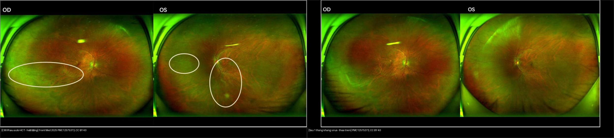
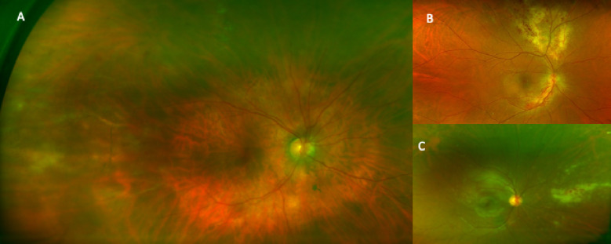
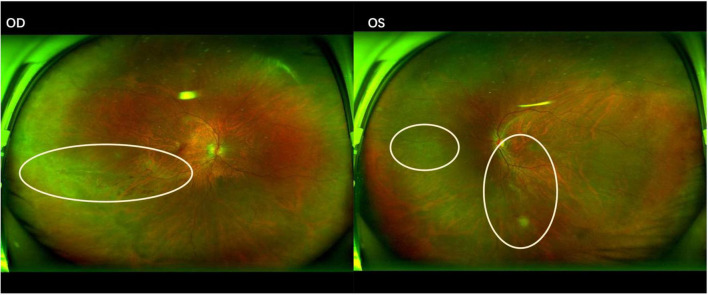
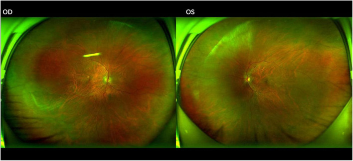
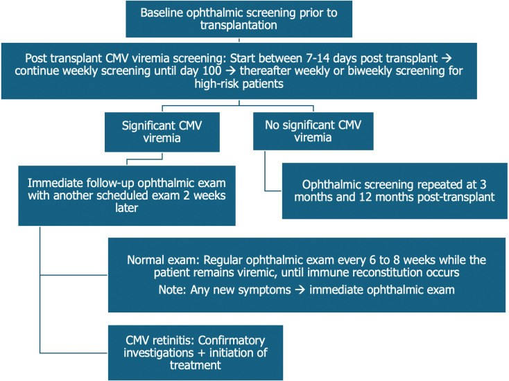
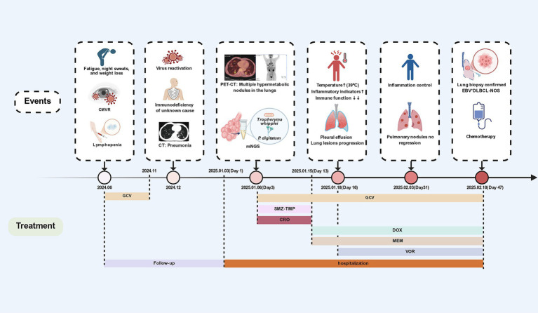

454 — Viêm võng mạc–màng mạch ở người suy giảm miễn dịch KHÔNG HIV: CMV sau ghép tạng/ung thư máu / CMV retinitis in non-HIV immunocompromised hosts
Tags: pattern:hoai-tu-vong-mac vung:vong-mac protocol:UWF protocol:PCR-dich-tien-phong incidentaloma:CMV-sau-ghep
Mức chắc chắn (certainty): tổng hợp y văn (literature synthesis) — nhóm tự biên từ 5 nghiên cứu mở (JOII 2026 CC BY 4.0; Front Med 2025 CC BY 4.0; World J Stem Cells 2025 CC BY-NC 4.0; Front Med 2026 CC BY 4.0; Ther Adv Ophthalmol 2026 CC BY-NC 4.0), chưa gắn ca nguyên văn đơn lẻ.
1. Tổng quan — cùng một virus, nhưng "chân dung" khác hẳn HIV
- Bệnh học (pathology): Cytomegalovirus (CMV, họ Herpesviridae) lây theo đường máu tới võng mạc và biểu mô sắc tố võng mạc (RPE), gây hoại tử toàn chiều dày võng mạc + viêm mạch (vasculitis) → mảng trắng đục + xuất huyết dọc mạch. Ở người suy giảm miễn dịch không HIV (ghép tạng, ung thư máu, thuốc ức chế miễn dịch, bệnh tự miễn, suy giảm bẩm sinh, đái tháo đường typ 2 kiểm soát kém), khiếm khuyết chủ yếu là tế bào T CD4/CD8 — virus thoát kiểm soát dù không có HIV.
- TẠI SAO hình thái khác HIV: ở HIV giai đoạn muộn, CD4 rất thấp nên viêm rất ít, tổn thương thiên về hạt/xuất huyết ("bánh pizza"). Ở người ghép/ung thư máu, miễn dịch ức chế nhưng không triệt để → viêm dịch kính nhiều hơn: loạt 117 mắt cho thấy viêm dịch kính độ +2 gặp 34,8% ở HIV âm tính vs 19,7% ở HIV dương tính (p = 0,009), trong khi thị lực nền lại tốt hơn ở nhóm HIV âm tính (1,31 ± 1,17 logMAR vs 1,85 ± 1,14 logMAR, p = 0,045). Vì vậy nhóm không HIV dễ bị nhầm với ARN (acute retinal necrosis) hơn.
- Ngưỡng định lượng nằm lòng:
- CD4 trung vị 167 tế bào/µL ở loạt 6 bệnh nhân CMV retinitis sau ghép tế bào gốc tự thân (auto-HCT); 102 tế bào/µL ở ca CMV retinitis khởi phát của u lympho ẩn (EBV+ DLBCL).
- Tỷ lệ CMV retinitis sau ghép tế bào gốc ở trẻ ~4%, xuất hiện 6 tuần – 6 tháng sau ghép (cửa sổ tái tạo miễn dịch).
- Sàng lọc chụp võng mạc góc rộng (UWF, Optomap ~200°) ở 39 người ghép tế bào gốc đồng loài có CMV tái hoạt: phát hiện 1 ca không triệu chứng (2,6%) — tổn thương viêm quanh tĩnh mạch ngoại vi + xuất huyết ở ngày 251 sau ghép; CMV PCR máu âm tính tại thời điểm chẩn đoán, chỉ PCR dịch tiền phòng dương.
- 66,7% hai mắt và 66,7% có CMV DNAemia trong loạt auto-HCT; tử vong do mọi nguyên nhân 83,3% (5/6) vì nhiễm trùng/nặng bệnh nền.
- TẠI SAO OCT/ảnh đáy mắt (không phải CT/MRI): tổn thương là bề mặt võng mạc–hắc mạc, không nằm trong hộp sọ; OCT đo phù hoàng điểm (macular edema), mỏng/hoại tử võng mạc, bất thường giao diện dịch kính–võng mạc. Siêu âm B chỉ dùng khi phương tiện trong suốt kém (bài 411).
2. Mẫu hình + chẩn đoán phân biệt theo mức miễn dịch & hình thái (gamut)
- Theo loại suy giảm miễn dịch (117 mắt/91 bệnh nhân, 2009–2024): ung thư máu (19 mắt), thuốc ức chế miễn dịch (20 mắt — sau ghép hoặc điều trị tự miễn), ghép tạng đặc/bệnh tự miễn/suy giảm bẩm sinh/ĐTĐ typ 2 (7 mắt), còn lại là HIV dương tính (71 mắt). Nhóm thuốc ức chế miễn dịch có viêm bao mạch võng mạc (vascular sheathing) 30% vs 0% so với nhóm ung thư máu.
- Theo hình thái trên UWF (3 kiểu):
- Viêm quanh tĩnh mạch (periphlebitis): viêm quanh mạch ngoại vi + xuất huyết trong võng mạc — kiểu sớm nhất, thường không triệu chứng (ca được phát hiện bằng sàng lọc).
- Thể tối cấp (fulminant/"brush-fire"): hoại tử lan rộng + xuất huyết hình ngọn lửa dọc cung mạch (vascular arcades) — giống ARN.
- Thể hạt (granular): nhiều nốt trắng nhỏ rải rác ở võng mạc ngoại vi, ít xuất huyết — dễ bỏ sót vì ngoại vi.
- Gamut chẩn đoán phân biệt: CMV (chính), ARN do VZV/HSV, PORN (progressive outer retinal necrosis), toxoplasmosis, giang mai, nấm Candida nội nhãn, u lympho nội nhãn (masquerade), bệnh Behçet.
- Gợi nhớ "CMV-NEGATIVE": CD4 thấp/ghép tạng, Một hoặc hai mắt, Viêm dịch kính (nhiều hơn HIV), Ngoại vi + dọc mạch, Early = quanh tĩnh mạch, Granular/fulminant, Aqueous PCR, Transplant/hematologic malignancy, Immunosuppressive drugs, Valganciclovir, Examine cả hai mắt.
3. Bảng so sánh phân biệt (ma trận đối chiếu)
| Thực thể (entity) | Hình ảnh điển hình | Chốt vào (rule-in) | Chốt loại (rule-out) | Gợi ý xác nhận |
|---|---|---|---|---|
| CMV retinitis — không HIV (ghép/ung thư máu/thuốc) | Viêm quanh tĩnh mạch ngoại vi, hạt trắng ngoại vi, hoặc "brush-fire" dọc cung mạch + xuất huyết; viêm dịch kính nhiều hơn HIV | Bối cảnh ghép/ung thư máu/thuốc ức chế miễn dịch + CD4 thấp + tổn thương dọc mạch/ngoại vi; PCR CMV dịch tiền phòng dương | Viêm rất ít + tế bào khổng lồ/hoại tử sâu đa ổ → PORN; tổn thương sát sẹo cũ đơn độc → toxoplasmosis | PCR CMV dịch tiền phòng/dịch kính; UWF; OCT hoàng điểm; không dựa vào PCR máu |
| ARN (VZV/HSV) | Hoại tử ngoại vi lan về sau + viêm tắc mạch + viêm dịch kính nổi + viêm tiền phòng | Viêm nặng + viêm tắc mạch + 1 bên ở người tương đối khỏe | PCR CMV dương + bối cảnh ghép → CMV | PCR dịch tiền phòng (VZV/HSV/CMV); acyclovir IV nếu ARN |
| PORN (VZV) | Nhiều ổ đục sâu cực sau, ranh giới rõ, tiến triển tính bằng ngày, gần như không viêm | Suy giảm miễn dịch nặng + đa ổ sâu + lan nhanh | Hoại tử toàn chiều dày ngoại vi → ARN/CMV | PCR VZV; tiên lượng rất xấu |
| Toxoplasmosis | Ổ vàng–trắng sát sẹo hắc mạc cũ (satellite) + viêm dịch kính | Ổ đơn độc cạnh sẹo cũ | Tổn thương lan dọc mạch/ngoại vi → CMV | Lâm sàng ± PCR; pyrimethamine–sulfadiazine |
| Nấm Candida nội nhãn | Nốt mủ (fluff ball) trong dịch kính + viêm màng bồ đào; đáy mắt mờ | Bối cảnh nhiễm nấm huyết/đường truyền tĩnh mạch + nốt trong dịch kính | Tổn thương dính võng mạc + dọc mạch → CMV | Cấy máu, dịch kính; kháng nấm |
| U lympho nội nhãn (masquerade) | Thâm nhiễm màu vàng kem dưới RPE + viêm dịch kính dai dẳng, không đáp ứng kháng virus | Tái phát nhiều lần + không đáp ứng thuốc + bối cảnh ung thư máu | Đáp ứng rõ với valganciclovir → CMV | PCR/cytology dịch kính, PET-CT, sinh thiết |

Trái: tổn thương hoại tử vàng–trắng + xuất huyết lan dọc cung mạch, cả hai mắt (Front Med 2025, PMC12575373 Fig. 1, CC BY 4.0). Phải: sau 1 tháng điều trị kháng CMV, tổn thương co lại, bờ rõ, bắt đầu sắc tố (Fig. 2, CC BY 4.0). Ảnh ghép letterbox, giữ nguyên tỷ lệ.Vì sao "nhiều viêm hơn HIV" lại là cạm bẫy
- Ở HIV, CD4 rất thấp → ít viêm → dễ nhận ra "CMV điển hình". Ở người ghép/ung thư máu, phản ứng viêm còn một phần → viêm dịch kính + viêm bao mạch rõ, hình ảnh giống ARN; nếu chỉ dựa vào "thấy viêm là ARN" sẽ dùng sai acyclovir và bỏ sót CMV.
- PCR dịch tiền phòng là chốt tác nhân, không phải mức viêm. Đặc biệt ca không triệu chứng: PCR máu âm tính mà PCR dịch tiền phòng dương.
4. Protocol chụp + sàng lọc + xử trí
- Ai cần soi đáy mắt: người ghép tạng/ghép tế bào gốc có CMV tái hoạt (viremia); ung thư máu đang hóa trị/ức chế miễn dịch; thuốc ức chế miễn dịch liều cao; suy giảm miễn dịch bẩm sinh; ĐTĐ typ 2 kiểm soát kém kèm triệu chứng mắt.
- Kỹ thuật:
- Soi đáy mắt giãn đồng tử (gold standard lâm sàng) + chụp võng mạc góc rộng (UWF, Optomap ~200°) — cần để thấy tổn thương ngoại vi mà soi thường bỏ sót.
- OCT hoàng điểm đánh giá phù hoàng điểm, mỏng võng mạc, dính dịch kính–võng mạc.
- Siêu âm B khi đục dịch kính/xuất huyết (bài 411).
- PCR CMV dịch tiền phòng (aqueous humor) — ít xâm lấn, chốt tác nhân; dịch kính khi cần.
- Lịch sàng lọc gợi ý (từ loạt ghép):
- Trước ghép: xét nghiệm CMV-IgG (dương tính = nguy cơ tái hoạt).
- Sau ghép: theo dõi CMV DNAemia theo phác đồ trung tâm; soi đáy mắt/khám mắt khi có viremia; ở trẻ ghép tế bào gốc, cửa sổ nguy cơ 6 tuần – 6 tháng.
- Theo dõi UWF ở người có tổn thương ngoại vi đã điều trị, vì tổn thương ngoại vi có thể tiến triển âm thầm.
- Điều trị:
- Toàn thân: valganciclovir 900 mg × 2/ngày (cảm ứng) hoặc ganciclovir IV 5 mg/kg mỗi 12 giờ; thời gian tùy mức ức chế miễn dịch và đáp ứng.
- Tiêm nội nhãn (intravitreal) ganciclovir/foscarnet: khi tổn thương đe dọa hoàng điểm hoặc để bổ trợ; loạt auto-HCT dùng tiêm nội nhãn là chính.
- Giảm ức chế miễn dịch khi có thể; ở trẻ kháng trị cân nhắc liệu pháp tế bào T thích ứng (adoptive T-cell therapy).
- Corticoid chỉ sau khi đã khống chế virus; cảnh giác bong võng mạc (RD) và IRU khi miễn dịch hồi phục.
flowchart TD
A[Nguoi ghep tang / ung thu mau / thuoc uc che mien dich] --> B{Co CMV viremia hoac trieu chung mat?}
B -->|Khong| C[Tiep tuc theo doi theo phac do - khong soi thuong quy]
B -->|Co| D[Soi day mat gian dong tu + UWF]
D --> E{Ton thuong ngoai vi / doc mach / hat trang?}
E -->|Khong| F[Theo doi lai khi co viremia]
E -->|Co| G[PCR CMV dich tien phong]
G -->|Duong| H[CMV retinitis: valganciclovir 900 mg x2 +/- tiem noi nhan]
G -->|Am| I[Can nhac ARN/PORN/toxo/lymphoma - PCR mo rong + sinh thiet]
H --> J[Giam uc che mien dich neu duoc + OCT hoang diem]
J --> K{De doa hoang diem / nang?}
K -->|Co| L[Tiem noi nhan ganciclovir/foscarnet]
K -->|Khong| M[Theo doi UWF 1-2 tuan den khi lanh]
M --> N[Canh giac RD, IRU, tai phat -> tim u an]
5. Biến thể bình thường và cạm bẫy
- PCR CMV máu âm tính KHÔNG loại trừ CMV retinitis: ca sàng lọc có PCR máu âm tại thời điểm chẩn đoán, chỉ dịch tiền phòng dương — vì vậy quyết định dựa trên đáy mắt + PCR dịch tiền phòng, không dựa vào xét nghiệm máu.
- "Nhiều viêm" không đồng nghĩa ARN: nhóm không HIV có viêm dịch kính + viêm bao mạch nhiều hơn HIV → dễ nhầm ARN; luôn gửi PCR đa tác nhân trước khi chốt.
- Hai mắt là quy luật, không phải ngoại lệ: 66,7% hai mắt ở loạt auto-HCT → luôn khám cả hai mắt, kể cả mắt không triệu chứng.
- Tổn thương ngoại vi dễ bị bỏ sót: soi đáy mắt thường chỉ thấy cực sau; UWF là công cụ để không bỏ sót. Thể hạt có ít xuất huyết nên càng dễ bỏ qua.
- Tái phát CMV = tìm u ẩn: ca EBV+ DLBCL khởi phát bằng CMV retinitis tái phát 5 tháng + nốt phổi; CD4 102/µL. Khi gặp suy giảm miễn dịch không giải thích + CMV tái phát, phải tìm ung thư máu (PET-CT, sinh thiết).
- Không chọc/điều trị mù khi chưa loại trừ u lympho nội nhãn: tổn thương dai dẳng, không đáp ứng kháng virus → sinh thiết dịch kính/cytology.
- Corticoid đơn thuần: làm bùng phát hoại tử — chỉ dùng sau kháng virus.
- Bong võng mạc muộn: theo dõi dài hạn sau khi tổn thương "lặng".
6. Tự lượng giá — Blind Quiz
Ca 1 — Người ghép tế bào gốc đồng loài, không triệu chứng mắt, được chụp UWF vì CMV tái hoạt. Ba kiểu hình thái dưới đây:

- Gợi ý lâm sàng: không đau, không nhìn mờ; sàng lọc chủ động.
- Hỏi: mô tả 3 kiểu hình thái (A/B/C)? Kiểu nào dễ bỏ sót nhất và vì sao? Xét nghiệm nào chốt tác nhân?
Bấm để hiện đáp án (findings + chẩn đoán)
- Dấu hiệu (findings): (A) viêm quanh tĩnh mạch ngoại vi + xuất huyết trong võng mạc — kiểu sớm/không triệu chứng; (B) thể tối cấp "brush-fire" — hoại tử lan rộng + xuất huyết ngọn lửa dọc cung mạch; (C) thể hạt — nốt trắng nhỏ rải rác ngoại vi, ít xuất huyết.
- Chẩn đoán (diagnosis): CMV retinitis ở người ghép tế bào gốc đồng loài. Kiểu hạt và quanh tĩnh mạch dễ bỏ sót vì ở ngoại vi và ít xuất huyết → cần UWF.
- Chốt tác nhân: PCR CMV dịch tiền phòng (PCR máu có thể âm).
- Nguồn ảnh: J Ophthalmic Inflamm Infect 2026 (PMC13265437) Fig. 1, CC BY 4.0.
Ca 2 — Bệnh nhân sau ghép tế bào gốc tự thân, nhìn mờ hai mắt. Đáy mắt:

- Hỏi: mô tả tổn thương? Vì sao đây là CMV chứ không phải ARN? Điều trị và theo dõi?
Bấm để hiện đáp án (findings + chẩn đoán)
- Dấu hiệu (findings): tổn thương hoại tử vàng–trắng + xuất huyết lan dọc cung mạch, hai mắt; bờ tổn thương chưa rõ.
- Chẩn đoán (diagnosis): CMV retinitis sau auto-HCT — bối cảnh ức chế miễn dịch kéo dài, CD4 trung vị 167/µL; PCR CMV dịch tiền phòng chốt.
- Điều trị: valganciclovir 900 mg × 2/ngày hoặc ganciclovir IV ± tiêm nội nhãn; giảm ức chế miễn dịch khi có thể; theo dõi UWF/OCT.
- Đối chiếu sau 1 tháng:

- Tổn thương co lại, bờ rõ, bắt đầu sắc tố = đáp ứng điều trị; giai đoạn muộn để lại sẹo teo hắc mạc–võng mạc.
- Nguồn ảnh: Front Med 2025 (PMC12575373) Fig. 1–2, CC BY 4.0.
Ca 3 — Trẻ sau ghép tế bào gốc, khi nào và sàng lọc thế nào?

- Hỏi: cửa sổ nguy cơ? Tỷ lệ gặp? Có nên sàng lọc thường quy mọi bệnh nhi?
Bấm để hiện đáp án (findings + chẩn đoán)
- Dấu hiệu (findings): lưu đồ nêu thời điểm và tần suất sàng lọc sau ghép tế bào gốc ở trẻ.
- Chẩn đoán/bối cảnh: CMV retinitis gặp ~4% bệnh nhi ghép tế bào gốc, thường 6 tuần – 6 tháng sau ghép (trùng tái tạo miễn dịch); triệu chứng âm thầm → khám đáy mắt khi có CMV viremia.
- Kết luận: sàng lọc thường quy mọi bệnh nhi còn tranh luận (tỷ lệ thấp, tốn nguồn lực); sàng lọc nhắm mục tiêu ở nhóm nguy cơ cao (viremia, ghép đồng loài, ức chế miễn dịch mạnh).
- Nguồn ảnh: World J Stem Cells 2025 (PMC12305170) Fig. 1, CC BY-NC 4.0 — giữ nguyên bản, không cắt/ghép.
Ca 4 — Nam 66 tuổi, CMV retinitis tái phát sau 5 tháng, kèm nốt phổi. Diễn tiến:

- Hỏi: vì sao phải tìm bệnh nền? Dấu hiệu nào gợi u lympho? Công cụ nào giúp?
Bấm để hiện đáp án (findings + chẩn đoán)
- Dấu hiệu (findings): CMV retinitis tái phát + nốt phổi mới, CD4 102/µL, CMV DNA máu và dịch tiền phòng cao; tổn thương phổi không đáp ứng kháng sinh thường.
- Chẩn đoán (diagnosis): CMV retinitis tái phát do suy giảm miễn dịch từ u lympho ẩn (EBV+ DLBCL-NOS); PET-CT phát hiện tổn thương tăng chuyển hóa phổi/hạch, sinh thiết xác nhận.
- Bài học: CMV tái phát + suy giảm miễn dịch không giải thích → tìm ung thư máu; mNGS hữu ích cho đồng nhiễm hiếm nhưng chẩn đoán xác định vẫn là mô bệnh học.
- Nguồn ảnh: Front Med 2026 (PMC12945748) Fig. 2, CC BY 4.0.
Bài liên quan chéo
- 400 – Tổng quan Mắt & thị giác
- 452 – Hoại tử võng mạc cấp (ARN) & CMV retinitis ở HIV (so sánh trực tiếp: HIV vs không HIV)
- 451 – Bệnh hệ thống ở mắt (bệnh tự miễn, thuốc ức chế miễn dịch)
- 446 – Phù hoàng điểm viêm vs DME (OCT hoàng điểm)
- 447 – Hội chứng đốm trắng (viêm võng mạc–hắc mạc)
- 448 – U hắc mạc (masquerade/u nội nhãn)
- 411 – Siêu âm nhãn cầu (khi không thấy đáy mắt)
Ảnh
454_cmvr-UWF_Fundus_PMC13265437-Fig1-CCBY.jpg— J Ophthalmic Inflamm Infect 2026 (PMCID: PMC13265437), CC BY 4.0.454_cmvr-HCT_Fundus_PMC12575373-Fig1-CCBY.jpg,454_cmvr-HCT-sau-dieu-tri_Fundus_PMC12575373-Fig2-CCBY.jpg,454_cmvr-HCT-seo_Fundus_PMC12575373-Fig3-CCBY.jpg— Front Med 2025 (PMCID: PMC12575373), CC BY 4.0.454_sang-loc-CMV-sau-ghep_PMC12305170-Fig1-CCBYNC.jpg— World J Stem Cells 2025 (PMCID: PMC12305170), CC BY-NC 4.0 (nguyên bản).454_dien-tien-dieu-tri-lymphoma_PMC12945748-Fig2-CCBY.jpg— Front Med 2026 (PMCID: PMC12945748), CC BY 4.0.composite_CMVR-truoc-vs-sau.jpg— ghép Fig. 1 + Fig. 2 (PMC12575373) bằngtools/make_composite.py, CC BY 4.0 (kế thừa).- Chi tiết giấy phép từng ảnh trong
images/CREDITS.md. AuntMinnie: chỉ dẫn link, không tải.
Không dùng để chẩn đoán độc lập khi chưa có người hướng dẫn.